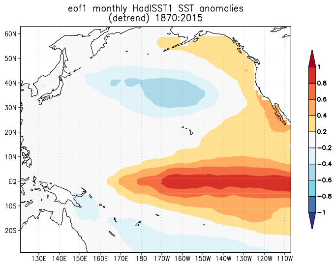
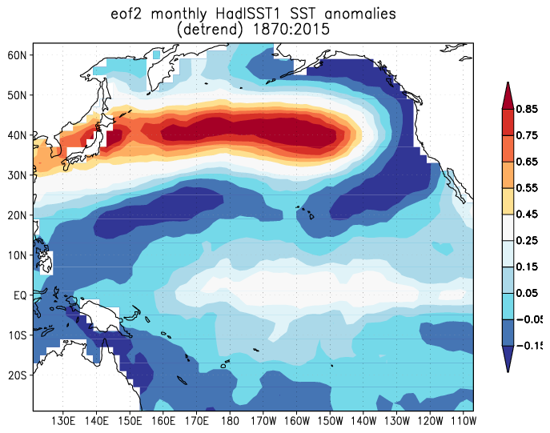
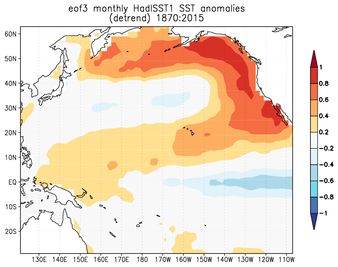

Investigation on 2015 Alberta/SK Drought
Zhenhua Li
Precipitation Anomaly and Circulation Anomaly
- Both May and June 2015 see significantly less precipitation in the
two provinces
- For the last 6 months there is an anomalous upper-level ridge in
the Alaska region.
- The precipitation anomaly is in the east flank of that anomalous
ridge
Precipitation Anomaly 2010-2015
GPH Anomaly and Precipitation Anomaly
Sea Surface Temperature Anomaly
- 2014 witnessed the warming of eastern tropical Pacific as an El
Nino developed in the early 2015
- In the meantime a warm SST anomaly has been sustained in the
northeastern Pacific since the beginning of 2014
Sea Surface Temperature Anomaly
SST Variations
- The leading 3 EOFs of Pacific Basin (30S-65N,120E-105W) after
detrending and removal of annual cycle correspond to ENSO, PDO,
and North Pacific Mode.
- Both PC 1 (ENSO) and 3 (North Pacific Mode) turn positive in
late 2013. PC 3 is exceptionally strong in 2014 and 2015.
Pacific SST EOF
| EOF1 (ENSO) |
EOF2 (PDO) |
EOF3 (North Pacific Mode) |
|  |
 |
 |
| |
|
|
PC1's relation with precipitation and GPH
PC1 (ENSO) regression with precipitation
PC1 (ENSO) regression with GPH
PC3's relation with precipitation and GPH
PC3 regression with precipitation
PC3 regression with GPH (May)
PC3 regression with GPH (Jun)
SK/AL Precipitation's correlation with GPH
SK/AL precipitation's correlation with SST
Summary
- Both ENSO or PC3 are related to the anomalous ridge over Alaska,
- Both have connection to the precipitation anomaly, though not as
strong as GPH anomaly.
- Northeast Pacific SST is anti-correlated with the May-June precipitation in
SK/Alberta.
- GPH anomaly near BC and Alaska is anti-correlated with the May-June
precipitation in SK/Alberta.
Created by yjwen.